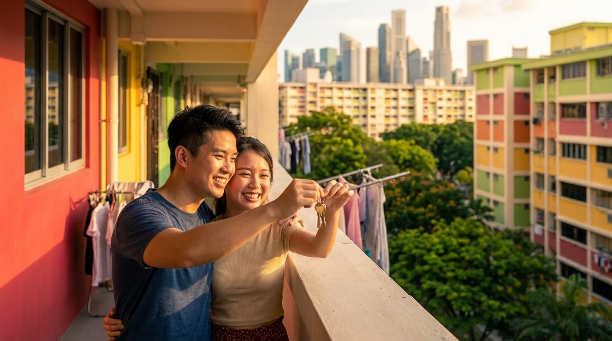
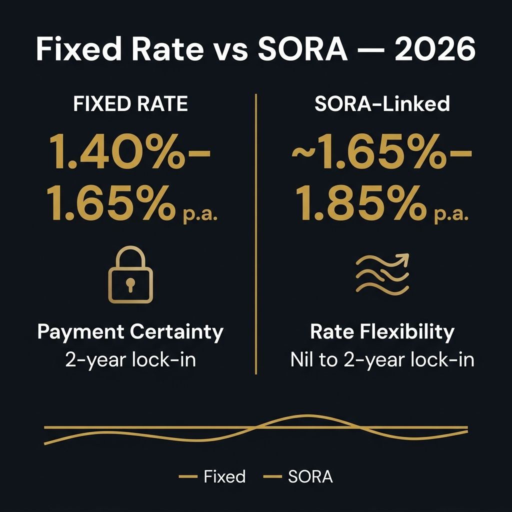
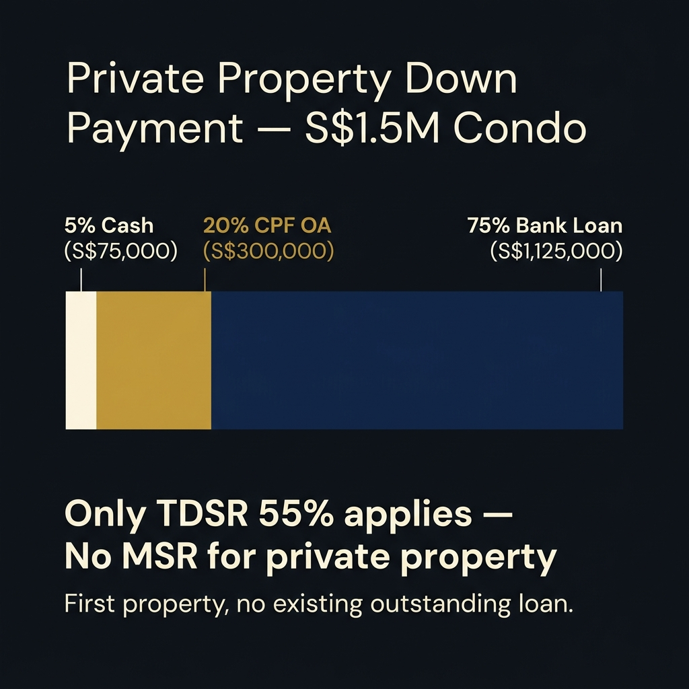
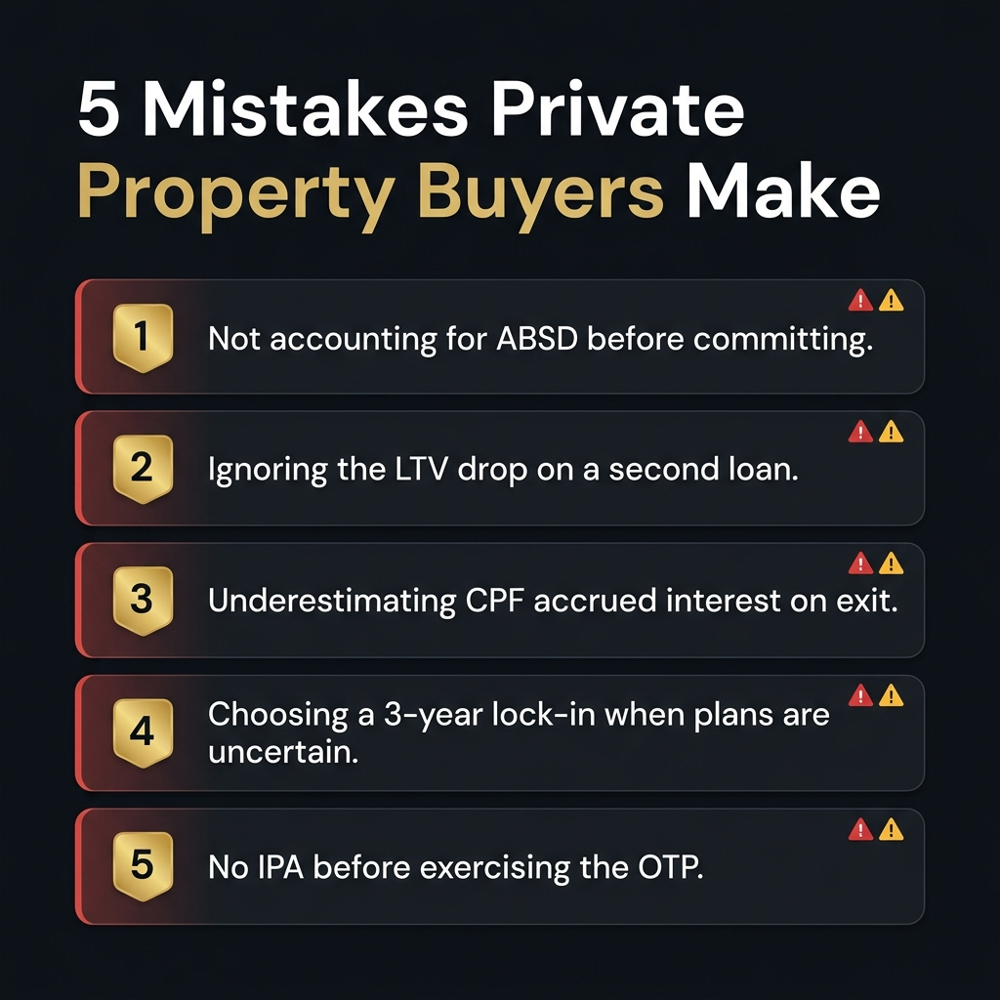

Buying a condo or landed property in Singapore is a different financial exercise from an HDB purchase — larger loan sizes, no MSR restriction, and often an upgrader's ABSD clock ticking in the background. Getting the loan structure right can mean tens of thousands of dollars in savings.
This guide draws on direct experience brokering private property loans across Singapore's condo and landed segments. Here's exactly what to compare, what to watch out for, and how to secure the most competitive loan in 2026.
Before comparing interest rates, private property buyers need to understand the MAS rules that set the hard ceiling on your loan — and why condo and landed buyers have more borrowing flexibility than HDB buyers.
The key advantage for private property buyers: MSR does not apply. HDB buyers face a 30% Mortgage Servicing Ratio cap on top of TDSR. For condo and landed buyers, only the 55% TDSR applies — giving you significantly more borrowing capacity at the same income level.
On a S$1,000,000 loan, the difference between a 1.40% fixed and a 1.65% SORA-linked rate is roughly S$150/month — but the difference between staying on a lapsed board rate (4%+) and repricing is S$1,500+/month. Rate shopping matters less than rate discipline at every lock-in expiry.
In 2026, Singapore home loans come in two main flavours: fixed rate packages (2–3 year lock-ins) and floating SORA-pegged packages. Here's how they actually differ in practice.
| Feature | Fixed Rate | SORA-pegged |
|---|---|---|
| Rate certainty | HIGH | VARIABLE |
| Typical 2026 rate | 1.40%–1.65% p.a. | ~1.65%–1.85% p.a. |
| Lock-in period | 2–3 years | 1–2 years (some nil) |
| Early repayment penalty | ~1.5% of outstanding loan | Lower or nil |
| Best when | Rates are high / rising | Rates are falling |
| Monthly payment | Predictable | Can change monthly |
In April 2026, fixed rates (from 1.40% p.a.) and SORA-linked packages (~1.65%–1.85% p.a., based on 3M Compounded SORA at ~1.06% plus a typical bank spread of 0.60%–0.80%) are surprisingly close. The gap has narrowed significantly from 2022–2023. For most first-time buyers, a 2-year fixed package still makes sense — payment certainty while you settle in, with the flexibility to reprice or refinance at expiry. See our full Singapore home loan rates comparison for 2026 for the latest figures across all 16 banks.
If you expect SORA to fall further — or you want a nil lock-in for maximum flexibility — a SORA-linked package is no longer the expensive option it once was. The decision in 2026 is less about cost and more about certainty vs flexibility. Either way, the one thing to avoid is letting your loan revert to the bank's board rate (3.50%–4.50%+) after a fixed period expires without repricing. Our guide on when to refinance your home loan in Singapore covers exactly how to handle lock-in expiry without missing the repricing window.

Fixed rates (1.40%–1.65% p.a.) and SORA-linked packages (~1.65%–1.85% p.a.) are unusually close in 2026 — the decision is about certainty vs flexibility, not just cost.
Private property purchases involve larger absolute cash requirements than HDB. Knowing exactly how much cash you need — and how much CPF can cover — prevents nasty surprises at completion.
| Scenario | Min Cash Required | CPF Can Cover | Bank Loan |
|---|---|---|---|
| First purchase (no existing loan) | S$75,000 (5%) | S$300,000 (20%) | S$1,125,000 (75%) |
| Upgrader (with existing HDB loan) | S$375,000 (25%) | S$450,000 (30%) | S$675,000 (45%) |

For a S$1.5M condo (first purchase, no existing loan): minimum S$75,000 cash + up to S$300,000 from CPF OA + S$1.125M bank loan. Private property buyers face only TDSR — no MSR cap.
CPF can only be used up to the property's Valuation Limit (VL), and total CPF usage (principal + accrued interest at 2.6% p.a.) cannot exceed 120% of VL. For higher-value private properties, your CPF balance may be exhausted before the Withdrawal Limit is hit — especially if you've previously used CPF for an HDB flat. Always verify your remaining CPF OA balance and withdrawal headroom before committing. For full details, see the CPF Board's guide on using CPF for home ownership.
One cost many upgraders overlook: CPF accrued interest. Every dollar of CPF used must be refunded with 2.6% p.a. compounded interest (CPF OA rate of 2.5% + an additional 0.1%) when you sell. On S$300,000 of CPF used over 10 years, that's roughly S$87,000 in accrued interest returned to CPF before you see any cash proceeds. Learn more in our guide on using CPF OA for your home loan.
These two ratios — not your bank's credit assessment — are the binding constraints on how much you can borrow in Singapore.
TDSR caps your total monthly debt obligations (home loan + car loan + credit card minimums + any other loans) at 55% of your gross monthly income. Banks calculate this at a stressed rate of 4% p.a. (the MAS floor), regardless of your actual loan rate. For private property buyers, this is the only ratio that applies — there is no MSR. For a full breakdown of how TDSR and MSR are calculated, see our TDSR and MSR explained guide, and our guide on the MAS stress test explains how the 4% floor is applied to different loan structures.
Example: Combined household income of S$20,000/month → TDSR limit = S$11,000/month. Car loan of S$1,500/month leaves S$9,500/month of home loan instalment capacity. At 4% stress rate over 30 years, that supports a loan of approximately S$1,980,000.
HDB buyers face an additional MSR cap — their home loan instalment alone cannot exceed 30% of income. A household earning S$20,000/month is capped at S$6,000/month for an HDB loan (supporting ~S$1.25M). The same household buying a condo has S$9,500/month available after a car loan — supporting ~S$1.98M. That's S$730,000 more borrowing capacity on the same income. If you're weighing whether to buy private or stick with HDB, our HDB loan vs bank loan comparison breaks down the full cost difference between the two routes.
Multiply your combined gross monthly household income by 0.55, then subtract all existing monthly debt payments. The remainder is your maximum monthly instalment. At 4% stress rate over 30 years, every S$1,000/month supports roughly S$209,000 of loan. On S$5,000/month of instalment capacity, that's approximately S$1,045,000 in loan amount.
Before anything else — calculate your borrowing limit using your gross income and all existing debts. This tells you your property budget before you fall in love with a flat you can't finance.
Apply to 2–3 banks (or let a broker do it simultaneously) for an IPA. Takes 1–3 business days. Locks in the bank's rate for 30 days and makes you a more credible buyer when you submit an OTP.
Don't just compare the headline rate. Compare: effective interest rate across the full lock-in term, lock-in period length, early repayment penalty, repricing options, and legal fee subsidies. A broker can model this across all 16 banks in one spreadsheet.
You have 21 days from OTP issuance to exercise it (pay the 4% balance of the option fee). Your bank needs to complete their valuation and issue a Letter of Offer within this window — factor this into your timeline.
Many banks offer legal fee subsidies (S$1,800–S$2,500) if you use their panel solicitors. Accept this where possible. Your solicitor handles the title search, CPF charge lodgement, and completion.
On the completion date, the bank disburses the loan directly to the seller (via your solicitor). You receive the keys. The caveat or mortgage is registered on the Singapore Land Authority (SLA) title.
We compare 16 banks daily at Nexus Mortgage. While rates change weekly, the structural differences between lenders are more stable. Here's how they broadly split in 2026:
| Lender type | Rate competitiveness | Legal subsidy | Approval speed | Best for |
|---|---|---|---|---|
| DBS / POSB | HIGH | YES | FAST | DBS payroll customers |
| OCBC | HIGH | YES | MEDIUM | HDB + private loans |
| UOB | HIGH | YES | MEDIUM | Flexible repricing |
| SCB / Citibank | MID | YES | MEDIUM | Foreigners / PR buyers |
| HSBC | MID | YES | MEDIUM | High-income professionals |
| Maybank / RHB | MID | VARIES | FAST | Malaysian PR buyers |
Rates between the top three local banks (DBS, OCBC, UOB) are often within 0.05–0.1% of each other — meaning the difference on a S$500,000 loan over 2 years is roughly S$500–S$1,000 total. Legal fee subsidies, cashback offers, and free repricing options can easily offset a small rate gap.
When you apply through a mortgage broker, banks know they're competing for your business. In our experience, this often unlocks rate concessions of 0.05–0.10% that walk-in customers don't receive. On a S$600,000 loan over 25 years, 0.10% in rate savings is approximately S$15,000 in interest.

These five mistakes collectively cost Singapore condo buyers tens of thousands of dollars — and most are avoidable with the right advice before you sign.
Additional Buyer's Stamp Duty (ABSD) is one of the largest upfront costs in a private property purchase — and the rate depends entirely on your residency status and how many properties you already own. Many buyers plan around only one scenario and miss the full picture.
| Buyer Profile | 1st Property | 2nd Property | 3rd & Beyond |
|---|---|---|---|
| Singapore Citizen (SC) | 0% | 20% | 30% |
| Singapore PR | 5% | 30% | 35% |
| Foreigner (non-FTA) | 60% | 60% | 60% |
| Foreigner (FTA nationals*) | 0% | 20% | 30% |
| Entity / Company | 65% | 65% | 65% |
*FTA nationals: US, Swiss, Liechtenstein, Icelandic, and Norwegian citizens under existing Free Trade Agreements pay the same ABSD rates as Singapore Citizens. Source: IRAS — Additional Buyer's Stamp Duty.
For Singapore citizens buying a second property, ABSD is 20% of the purchase price — S$300,000 on a S$1.5M condo. PRs face an even steeper 30% on a second property (S$450,000 on the same unit). Foreigners pay a flat 60% on any purchase — S$900,000 on a S$1.5M condo — making Singapore one of the most expensive markets in the world for non-resident buyers. Many upgraders plan to sell their HDB flat first to avoid ABSD, but timing is everything. The 6-month ABSD remission window for citizens starts from the private property's completion date (for new launches) or OTP exercise date (for resale). Miss that window and ABSD is payable in full.
Some couples "decouple" — transferring their HDB to one name so the other spouse can buy a private property as a "first property." This triggers Buyer's Stamp Duty on the transfer and stamp duty savings may not outweigh the costs. Get proper legal and tax advice before attempting any decoupling strategy — the numbers don't always work out.
If you buy a private property while your HDB loan is still outstanding, your LTV drops from 75% to 45% — meaning you need to fund 55% yourself. On a S$1.5M condo that's S$825,000 out of pocket. Most upgraders don't have that. The typical solution: sell the HDB first, or get bridging financing. Either way, model this before you sign the OTP.
If you used S$300,000 of CPF to fund your condo purchase and hold it for 10 years, you'll need to return roughly S$387,000 to CPF on sale (principal + 2.6% p.a. compounded — CPF OA rate of 2.5% + 0.1%). On a S$1.5M property that's manageable — but on a smaller unit with lower appreciation, it can eat significantly into your cash proceeds. Always model your net cash position at exit, not just the sale price.
Private property buyers often have more complex plans — upgrading again, en bloc potential, overseas relocation. A 3-year fixed lock-in at 1.55% saves roughly S$150/month versus a 2-year package, but costs S$15,000–S$25,000 in early repayment penalties if you need to sell in year two. Match your lock-in to your realistic holding horizon.
For private property, the option fee is typically 1% of the purchase price — S$15,000 on a S$1.5M condo. Exercising the OTP without a bank IPA in hand risks forfeiting that sum if the bank's formal credit assessment differs from what a relationship manager told you informally. Always get it in writing first.
We compare 16 banks simultaneously and present you with the best package for your situation — fixed, SORA, HDB, or private. Zero fees. Takes 10 minutes.
WhatsApp Dan — Free ComparisonFor a first private property purchase (no existing home loan), the minimum down payment is 25% of the purchase price — at least 5% in cash, up to 20% from CPF OA. If you have an existing outstanding home loan (e.g. still holding HDB), the LTV drops to 45% and you need 55% down, with at least 25% in cash.
As of April 2026, fixed rates start from 1.40% p.a. (2-year) and SORA-linked packages run at ~1.65%–1.85% p.a. (3M Compounded SORA ~1.06% + bank spread). The gap is narrow. A 2-year fixed is the safer default for most condo buyers — payment certainty during your initial ownership period. If you have a shorter holding horizon or expect to refinance soon, a nil lock-in SORA package gives more flexibility. Never let the loan revert to board rate (3.50%–4.50%+) at expiry.
No. The Mortgage Servicing Ratio (MSR) applies only to HDB flat purchases and executive condominiums within their minimum occupation period. For private condos and landed property, only the TDSR (55%) applies. This gives private property buyers significantly more borrowing capacity relative to their income compared with HDB buyers.
ABSD rates differ by residency status. Singapore Citizens: 0% (1st property), 20% (2nd), 30% (3rd+). Singapore PRs: 5% (1st), 30% (2nd), 35% (3rd+). Foreigners (non-FTA): flat 60% on any purchase. FTA nationals (US, Swiss, Liechtenstein, Icelandic, Norwegian): same as SC rates. Entities: 65% flat. On a S$1.5M condo, a SC second-property ABSD is S$300,000; a PR second property is S$450,000; a foreigner purchase is S$900,000. Citizens who sell their first property within 6 months of completing the new purchase can apply for ABSD remission. See the official IRAS ABSD page for full rates and conditions.
An In-Principle Approval (IPA) typically takes 1–3 business days. Full loan approval (Letter of Offer) after the bank completes their property valuation usually takes 5–10 business days. For new launch condos with longer completion timelines, the IPA is valid for 30 days — a broker can time reapplications to keep your approval current through to the sale & purchase agreement.
Yes — at Nexus Mortgage, our service is completely free to borrowers. Banks remunerate us on disbursement. The rate you receive through a broker is identical to or better than a direct application, and you benefit from simultaneous comparison across 16 lenders in one submission.
This article is for general information purposes only and does not constitute financial advice. All rates and figures are indicative as of April 2026 and subject to change. Consult a licensed mortgage broker or financial adviser before making any borrowing decision.